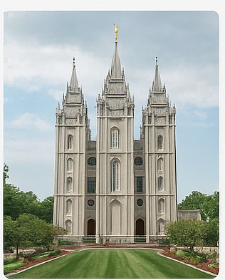
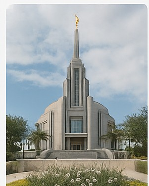
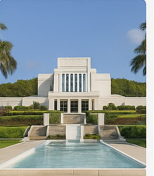

☰
Temple Album
Home
Old
New
Large
Small
Temple Album

Salt Lake Temple

Rome Italy Temple
Paris France Temple
Accra Ghana Temple
Aba Nigeria Temple
Preston England Temple
Laie Hawaii Temple
Kyiv Ukraine Temple
Provo City Center Temple